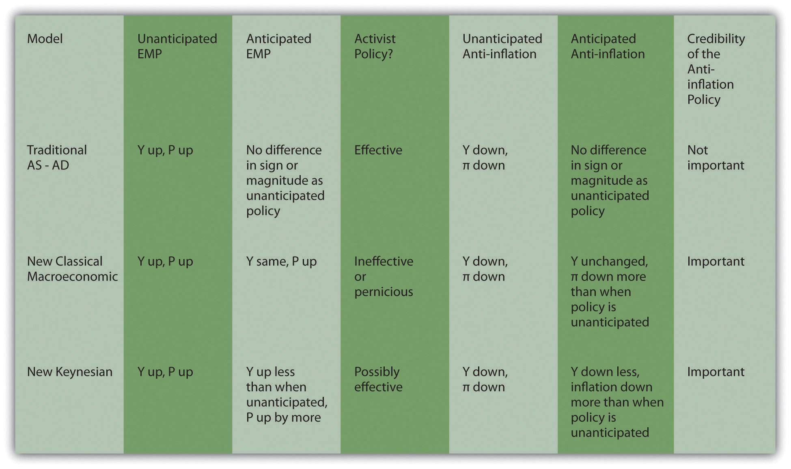

Fighting inflation requires the central bank to hold the line on AD, even in the face of a leftward shift in the AS curve that causes a recession (Y* < Ynrl). The question is, How much will fighting inflation “cost” the economy in terms of lost output? According to the pre-Lucas AS-AD model, about 4 percent per year for each 1 percent shaved from inflation! The new classical macroeconomic model, by contrast, is much more optimistic. If the public knows and believes that the central bank will fight inflation, output won’t fall at all because both the AD and the AS curves will stay put. Workers won’t fight for higher wages because they expect P* will stay the same. An unanticipated anti-inflation stance, by contrast, will cause a recession. The moral of the story told by the new classical macroeconomic model appears to be that the central bank should be very transparent about fighting inflation but opaque about EMP!
The new Keynesian model also concludes that an unanticipated anti-inflation policy is worse than an anticipated and credible one, though it suggests that some drop in Y* should be expected due to stickiness. A possible solution to that problem is to slowly ease money supply growth rather than slamming the brakes on. If the slowing is expected and credible (in other words, if economic agents know the slowing is coming and fully expect it to continue until inflation is history), the AS curve can be “destickyfied” to some degree. Maybe contracts indexed to inflation will expire and not be renewed, new contracts will build in no or at least lower inflation expectations, or perhaps contracts (for materials or labor) will become shorter term. If that is the case, when money supply growth finally stops, something akin to the unsticky world of the new classical macroeconomic model will hold; the AS curve won’t shift much, if at all; and inflation will cease without a major drop in output.
How can central bankers increase their credibility? One way is to make their central banks more independent. Another is not to repeatedly announce A but do B. A third is to induce the government to decrease or eliminate budget deficits.
Figure 26.3 The three major macro models compared
Figure 26.3 "The three major macro models compared" summarizes the differences between the pre-Lucas AS-AD model, the new classical macroeconomic model, and the New Keynesian model.
In Bolivia in the first half of 1985, prices rose by 20,000 percent. Within one month, inflation was almost eliminated at the loss of only 5 percent of gross domestic product (GDP). How did the Bolivians manage that? Which theory does the Bolivian case support?
A new Bolivian government came in and announced that it would end inflation. It made the announcement credible by reducing the government’s deficit, the main driver of money expansion, in a very credible way, by balancing its budget every single day! This instance, which is not atypical of countries that end hyperinflation, supports the two rational expectation-based models over the pre-Lucas AS-AD model, which predicts 4 percent losses in GDP for every 1 percent decrease in the inflation rate. The fact that output did decline somewhat may mean that the policy was not credible at first or it may mean that the new Keynesian model has it right and the AS curve was a little bit sticky.